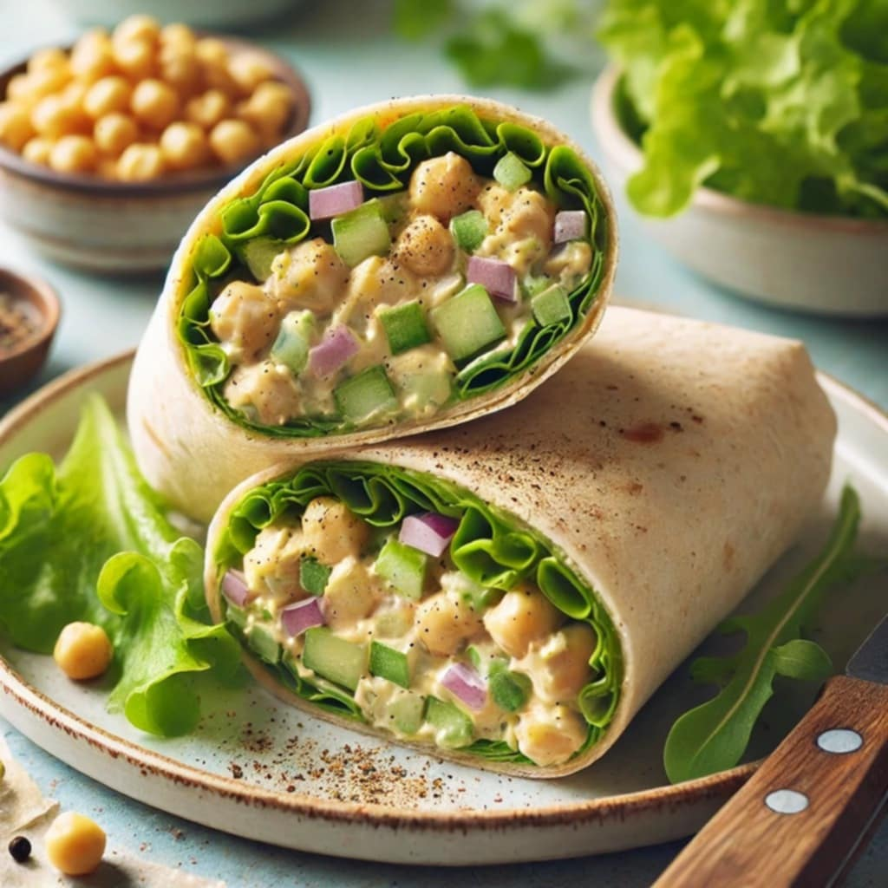
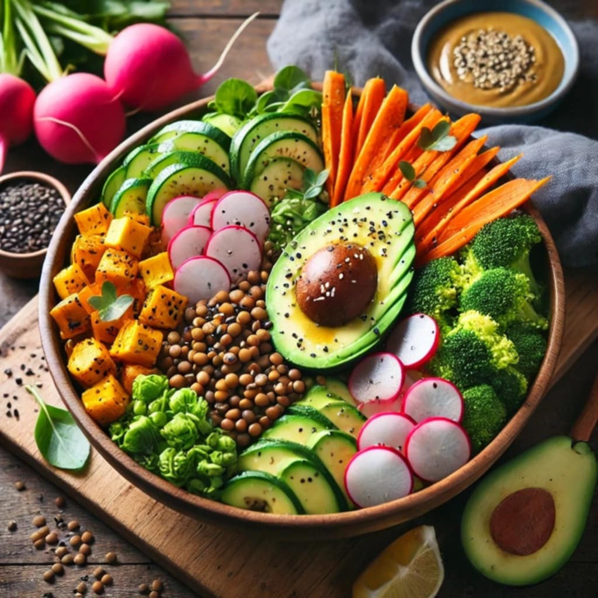

Lunch

Chickpea Salad Wraps
Ingredients
- 1 can chickpeas, drained and rinsed
- 2 tbsp vegan mayo (or tahini)
- 1 tbsp Dijon mustard
- 1/4 cup diced celery
- 1/4 cup diced red onion
- Salt & pepper to taste
- Wraps or lettuce leaves
Instructions
- Mash chickpeas in a bowl, leaving some texture.
- Mix in vegan mayo, mustard, celery, red onion, salt, and pepper.
- Spoon mixture onto wraps or large lettuce leaves, roll up, and enjoy.

Lentil and Veggie Buddha Bowl
Ingredients
- 1 cup dry lentils, rinsed
- 1 tbsp olive oil
- 1 onion, diced
- 2 cloves garlic, minced
- 1 carrot, diced
- 1 can crushed tomatoes
- 1 tbsp tomato paste
- 1 tsp dried basil, oregano, and thyme
- Salt and pepper to taste
- Cooked pasta of your choice
Instructions
- Cook lentils in boiling water until tender (about 20 minutes)
- In a large pan, heat olive oil. Add onion, garlic, and carrot, cooking until soft. fruit.
- Stir in tomatoes, tomato paste, and herbs. Simmer for 10 minutes, then add lentils.
- Season with salt and pepper, and serve over pasta.